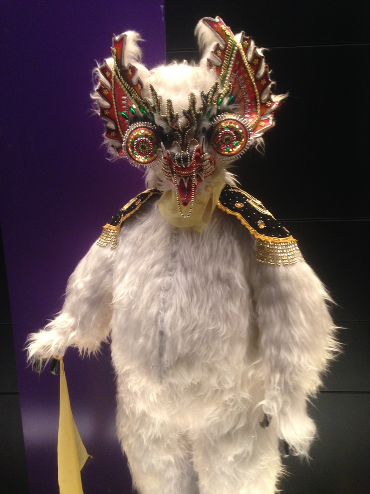
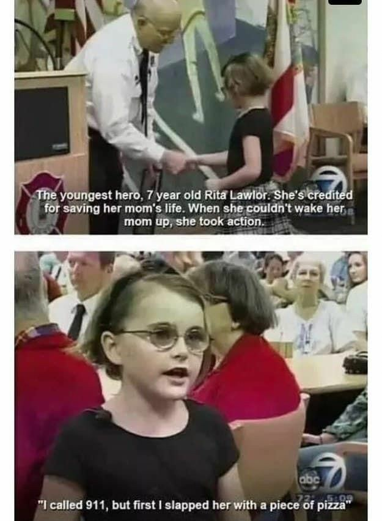
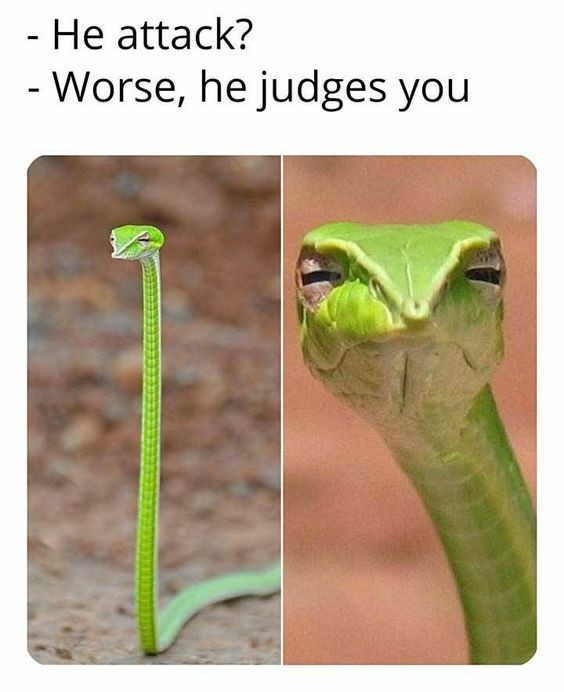

Chupacabras
Sofia LINARES ORELLANA
en voie de #digitalisation #MSMDD,
#RSE #ESS #conseilresponsable 🫶,
dans la #transitionécologique 🌎 dans l'industrie textile🦄,
dans une vie ultérieure designer spécialisé dans la Mode 💃
MEMES du moment
Dans le but de partager la bonne humeur, je partage des images divertissantes, aussi connues comme memes.
 Qu'est ce que c'est un.e Chupacabras?
Wikipedia definit un chupacabras (nom commun, masculin) une créature qui "fait partie de la culture populaire dans toute l'Amérique latine, notamment au Mexique et sur l'île de Porto Rico. L'animal se nourrirait en suçant le sang des animaux de ferme, comme les chèvres ou les vaches, en faisant des trous parfaitement circulaires dans le cou jusqu'au cervelet, tuant l'animal en ne provoquant aucune souffrance." "Le terme chupacabras (littéralement « suceur de chèvres ») est supposément inventé par une personnalité de la télévision portoricaine, Silverio Pérez qui utilise ce nom comme une blague, mais le mot est également utilisé en 1990 dans le roman de Michael Crichton, Jurassic Park, qui paraît avant la légende." Pourquoi
Pourquoi Sofia est un chupacabras?
Pour le plaisir de la provoque: le même type de provoque utilisée par le mouvement Dada, dont Sofia est profondement admiratrice.
Voici une présentation/ interpretation de ce qu'est un chupacabras par Scooby Doo